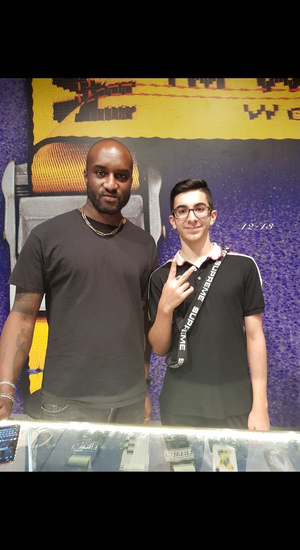

In 2017 I had just entered highschool, and had never really had a pair of shoes I had purchased myself. Prior to this I had always had my parents buy me whatever black school shoes they felt look nice, which looking back, was a horrible decision
Though they bought me shoes, I always wore my Black crocs. I refused to ever take them off, and I wore them for every single activity.
However, with highschool starting I wanted to wear something new that I purchased myself. After some research, I landed on a blue pair of Adidas NMD R1's for around $100.
I didn't know it at the time, but these shoes were quite popular in hypebeast culture in 2017. Having these shoes introduced me to a completely new world of sneakers.
By this time, I had not purchased another pair of shoes for almost a year. I had stuck with the NMD's, and they had accumulated permanent damage along with a hole by the toes of both shoes. Like the crocs I previously owned, I refused to get rid of them.
Being in Dubai, the sneaker culture was booming. Everyone was wearing thousand dollar outfits fully matched from head to toe. Though, they had one thing in common, they were all wearing a sneaker called Yeezys
I didn't think much of the sneakers. Though I couldn't help but notice the amount of people that would take a peak and sometimes fully stop to take a picture when people had these sneakers on
After doing some research at home, it became clear these sneakers popularity primarily stemmed from a man named Kanye West, who created them. Being as influential as Kanye West, any sneakers he wore automatically resulted in them being relatively expensive
Regardless of the reasoning for the popularity of the shoe, I wanted them as the attention people gave to them seemed unreal
It took months of trying to understand how a "sneaker release" functioned, and multiple losses on the latest releases. However, in summer 2018 I finally purchased my first pair of Yeezys: The Yeezy Butter
After purchaing my first pair of Yeezys, my love for sneakers grew exponentially. I had become greatly involved with the sneaker community in the UAE, and had immersed a great deal of sneakers.
Multiple Jordans, Yeezys, and Off-White sneakers were now mine. Sneakers that I had never even thought of getting the chance to look at I was now wearing. At times I would have a pair of sneakers for only a few weeks at a time, and trade them for a new pair. My collection was constantly expanding and changing at any moment.
Though, this did not come easy. I did not have the money to constantly purchase the newest releases, so I started making some. I began I resell business, where I used my skills of being able to buy the hottest releases as quickly as possible, and selling them for a profit
This made my sneaker collection possibilites endless. If I wanted a sneaker, I would flip a couple sneakers after some releases and buy it.
It was at this point that I had developed a name for myself in the sneaker community, and this is where I would attend a sneakercon of sorts called "SoleDXB".
Here I was able to see every coveted sneaker on earth, along with networking my name.
Shortly after this event, I had gotten a call telling me I had the opportunity to meet a sneaker icon: Virgil Abloh. I took this opportunity, and it was almost like all my previous work had led up to this moment
Picture of myself and Virgil Abloh and Video of my Travis Scott Air Jordan 1 Lows at SoleDXB
After Covid‐19 hit, sneaker reselling became increasingly difficult due to the lack of being able to recieve, or deliver sneakers.
Along with this, school took up most of my time as I was recieving letters from colleges, and needed to prepare
Though I still followed the sneaker culture, it was frozen due to Covid‐19.
It wasn't until college had started where the markets had started to open up again. Though by that time, I was in college and had other worries to attend to. Today, I still follow sneakers everyday, though, I sold most of my collection and only hold a few pairs of shoes that are meaningful to me.